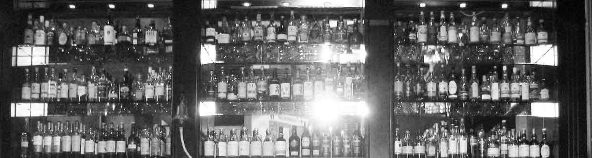

Vieux-Lyon, bord de Saône
Everyday
pub
Fish & chips, burgers, bière brassée maison, sport en direct sur 4 écrans, quiz le lundi, concerts, whisky.
Bar : 11h-00h30 dim-jeu, 11h-02h30 ven-sam

Bière maison
Le Wallace brasse sa propre bière.
- Wallace IPA
- Double IPA
- Lager
- NEIPA


16 pressions
Brewdog, Guinness, Galway Bay, La Chouffe, Lagunitas et d'autres.
- Bouteilles et canettes
- Sans alcool : Punk AF, Guinness 0.0
- Gins Fever-Tree, + 2 €
- Vins

Wee whisky list
Whiskies d'Écosse, d'Irlande et du monde. Il y a aussi un Whisky Club.
Cuisine
Cuisine lun-sam 12h-15h et 19h-22h, dim 11h-15h et 18h30-22h. Plat du jour le midi, du lundi au vendredi.

Sport & événements
Foot, rugby, darts : tous les grands sports en direct sur 4 grands écrans.
-
Lundi, 20h30
Quiz
Le plus grand quiz de Lyon. Verres gratuits.
-
Régulier
Concerts
Des concerts au bar, dont la Fête de la Musique.
-
Club
Whisky Club
Autour de la Wee whisky list.
-
Brasserie
Wallace Craft Beer
Les bières de la brasserie maison.
-
Concours
Wallace on Tour
Le concours photo.

Dans la presse
Mondial féminin 2019 : la vidéo tournée au Wallace relayée par la presse internationale.
- Rolling Stone
- USA Today
- Fox News
- The Guardian
Le Wallace a aussi été cité par Le Progrès, ExitMag, Spot Web et Découvrir Auvergne-Rhône-Alpes. Son brunch british a aussi eu droit à un article.
Infos pratiques
2 Rue Octavio Mey
69005 Lyon, Vieux-Lyon
Horaires
| Jour | Bar | Cuisine |
|---|---|---|
| Lundi | 11h-00h30 | 12h-15h, 19h-22h |
| Mardi | 11h-00h30 | 12h-15h, 19h-22h |
| Mercredi | 11h-00h30 | 12h-15h, 19h-22h |
| Jeudi | 11h-00h30 | 12h-15h, 19h-22h |
| Vendredi | 11h-02h30 | 12h-15h, 19h-22h |
| Samedi | 11h-02h30 | 12h-15h, 19h-22h |
| Dimanche | 11h-00h30 | 11h-15h, 18h30-22h |